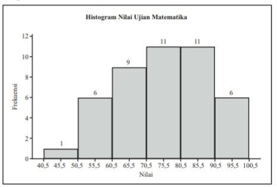

STATISKA
Laju Pertumbuhan Penduduk Indonesia
Penyajian Data
Distribusi Frekuensi
Histogram, Poligon Frekuensi, dan Ogive
- Histogram 
- Poligon frekuensi
- Ogive
Ukuran Pemusatan dan Penyebaran Data Berkelompok
Ukuran Pemusatan Data Berkelompok
- Median
- Modus
- Median
Ukuran Penyebaran Data Berkelompok
- Median
- Simpangan Rata-rata
- Simpangan Baku dan Ragam
Jumlah penduduk Indonesia mulai tahun 1945 sampai tahun 2015 ditampilkan pada tabel di bawah ini.
Contoh :
Informasi yang dapat diambil dari data tersebut diantaranya adalah 50% siswa dalam kelas tersebut mendapatkan nilai pada rentangan 71 – 90. Hanya ada 1 siswa yang mendapatkan nilai antara 41 – 50, sedangkan 6 siswa mendapatkan nilai istimewa, yaitu di atas 90.
Contoh :
Selanjutnya distribusi frekuensi ini diubah ke dalam grafik histogram, polygon frekuensi, dan ogive yang disajikan berikut ini.
Contoh :
Berdasarkan distribusi frekuensi di atas, rata-rata skor TOEFL siswa dalam kelas tersebut adalah 433,7. Kelas keempat yaitu 424,5 – 449,5 merupakan kelas median dengan mediannya adalah 437. Kelas kelima merupakan kelas modus dengan modusnya adalah 454,5.

Keterangan :
Keterangan :
Keterangan :
Contoh :
Dari distribusi di atas didapatkan simpangan rata-rata 3,5, simpangan baku sebesar 5,1 dan ragam sebesar 25,7
Keterangan :